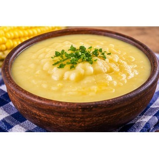

Reseña del cantón
Vinces es conocido por su identidad montuvia y por su historia vinculada al comercio fluvial. Sus antiguas construcciones, sus tradiciones y el paisaje junto al río forman parte de sus atractivos. La agricultura sigue siendo importante para la economía del cantón, junto con el comercio y los servicios. Sus fiestas y costumbres conservan una parte significativa del patrimonio cultural de Los Ríos.
Población
80.909 habitantes (Censo de Población y Vivienda 2022).
Parroquias
Vinces (cabecera cantonal), Antonio Sotomayor y Palmira.
Economía y cultura
El río ha sido fundamental para la historia y la vida cotidiana de Vinces. Su patrimonio cultural, las expresiones montuvias y la gastronomía tradicional dan identidad a los recorridos por el cantón.
Alcalde
Juan Alfonso Montalván Cerezo — período 2023–2027.

Fuente: Directorio oficial de alcaldes y alcaldesas de AME.
Platos típicos
Sango de choclo, caldo de bola, humitas y tamales.

Estas preparaciones se documentan como parte de la gastronomía local. Su disponibilidad y preparación pueden variar entre comunidades.
Lugares turísticos
Malecón de Vinces, casas patrimoniales y haciendas cacaoteras. El cantón conserva elementos históricos y culturales asociados al auge del cacao.
Hoteles y hospedaje: ubicación y direcciones
Estos establecimientos aparecen en directorios públicos y resultados de mapas consultados. Confirma por teléfono que sigan operando, sus tarifas y disponibilidad antes de viajar.
- Hotel Noches de París
Dirección o referencia: Av. Aquiles Carriel, referencia C6RX+GHJ, Vinces.
Ver ubicación y cómo llegar en Google Maps - Hotel Azuay
Dirección o referencia: Sector calle Bolívar con Córdova, referencia C6RX+XRF, Vinces.
Ver ubicación y cómo llegar en Google Maps
Mapa del cantón
Mapa de Google Maps centrado en el cantón: